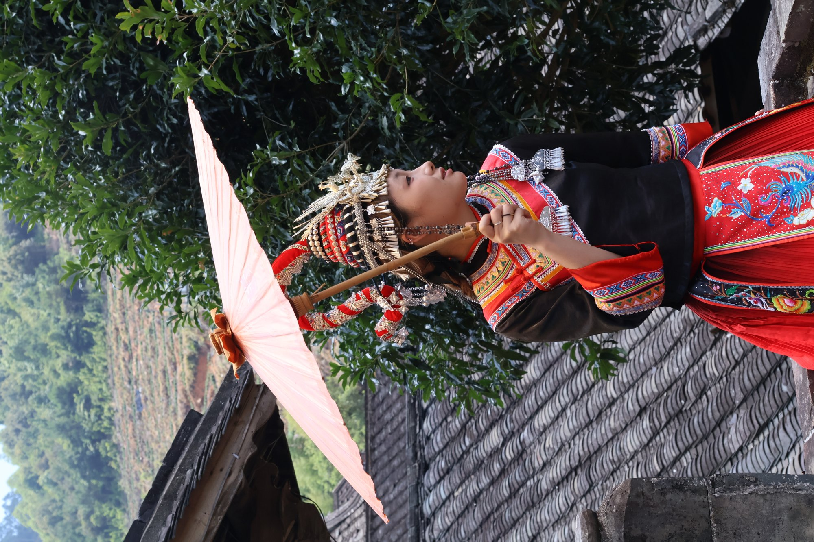
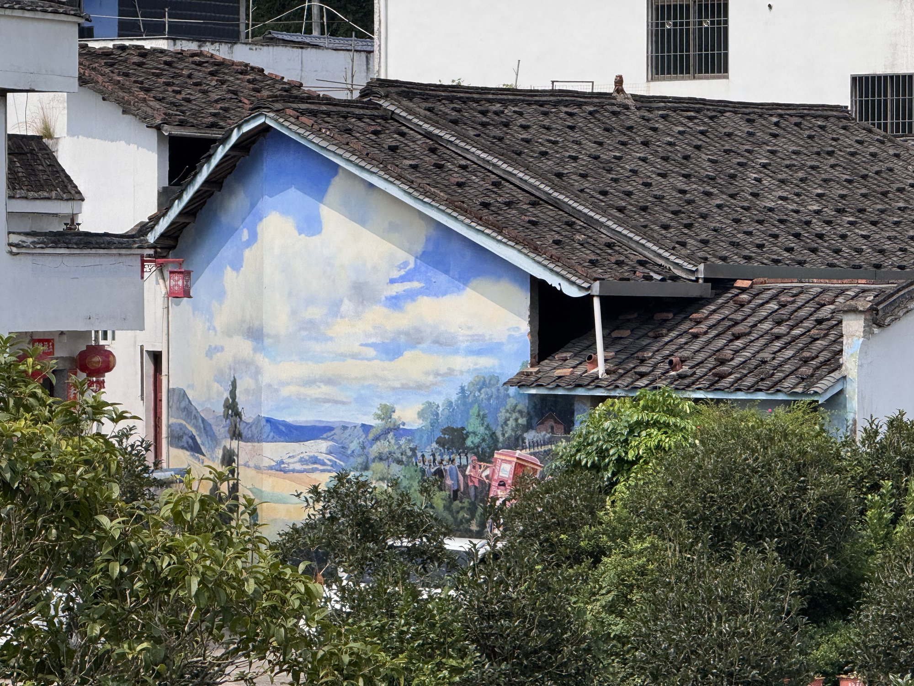
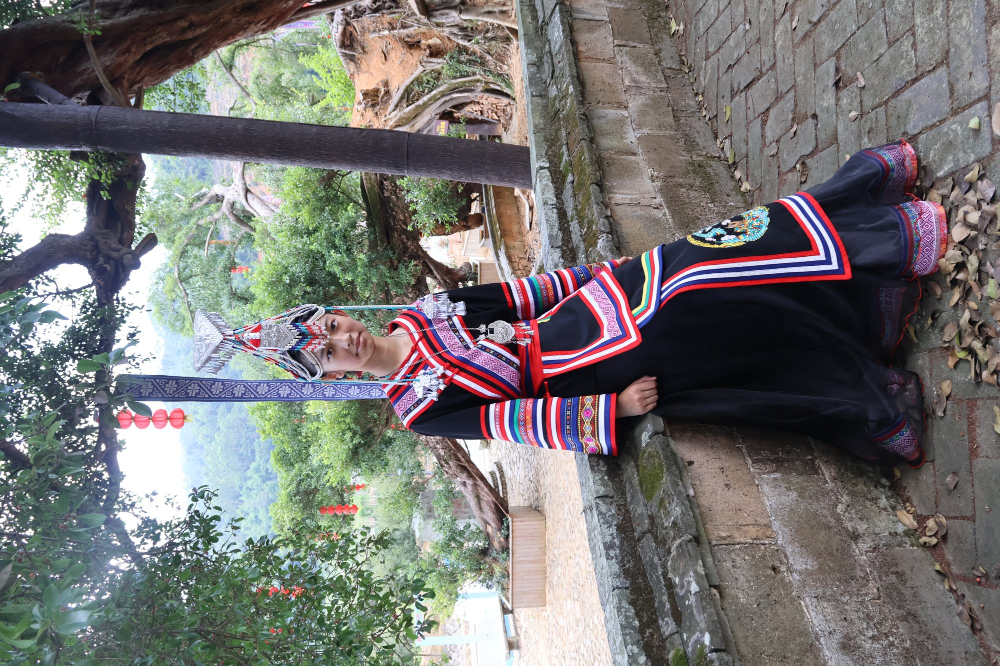
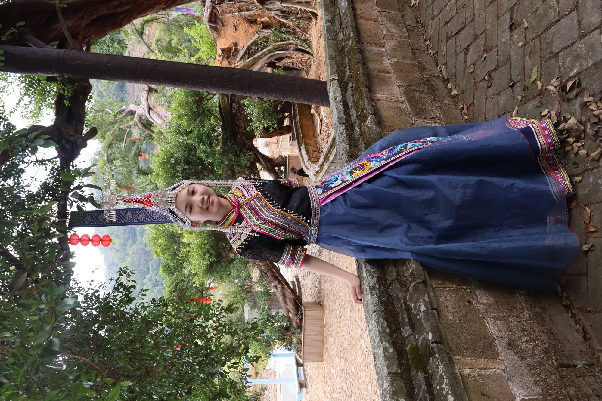
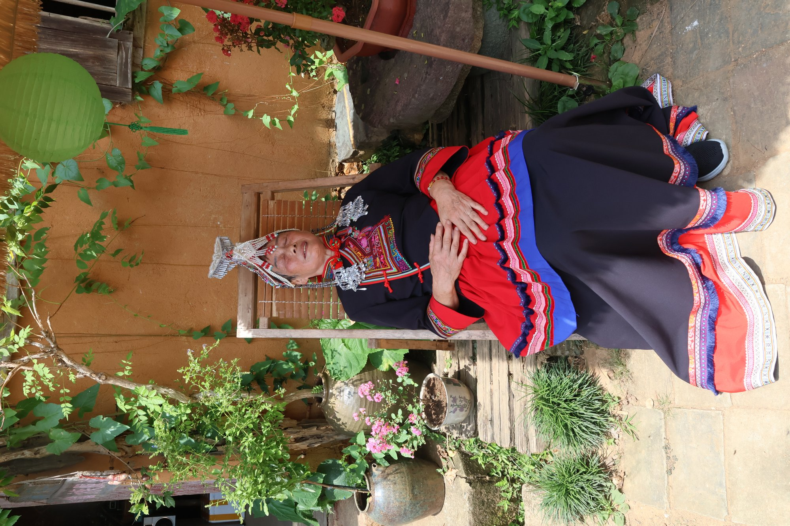
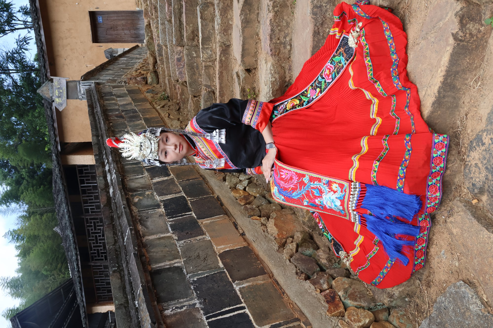
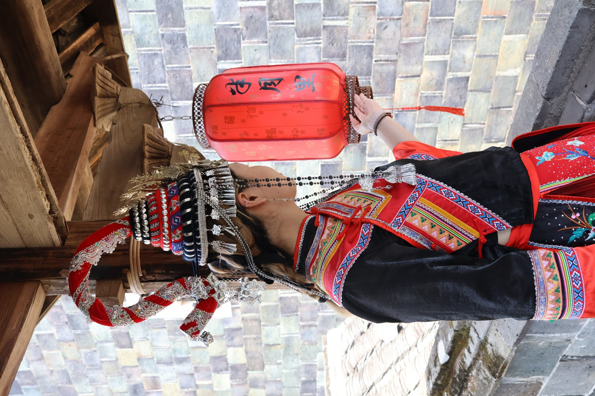
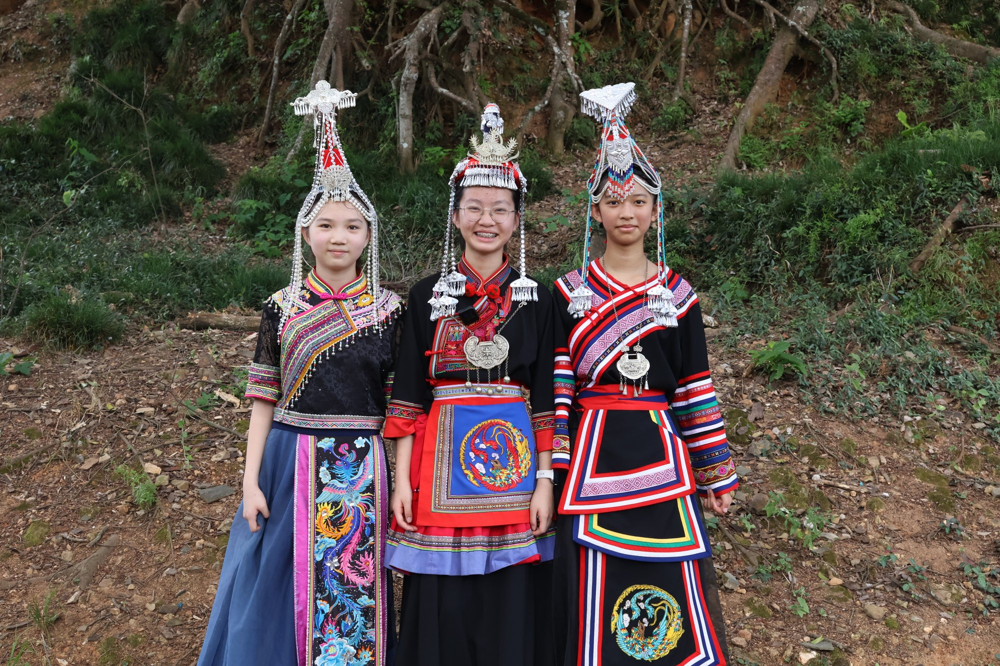

黑 · 红 · 金
黑是山，红是火，金是羽。一套凤凰装的配色，几乎就是畲族对自然的理解。
壹 服饰 · COSTUME
黑色是山，红色是火，金线是羽。畲家女子的盛装，是一部穿在身上的族群史诗——凤冠、花边、彩带，每一处都藏着身份与祝福。我们把镜头对准这些细节：先看衣服，再看衣服背后的人。

以黑（青）布为底，衣襟、袖口、裙边镶红黄绿三色花边，前襟绣凤，裙裾如尾。相传畲家女是凤凰的化身，一身盛装便是一只开屏的凤凰。
少女梳「小凤凰髻」，已婚妇女梳「大凤凰髻」，额前压银冠、缀红绒球与银链。走起路来叮当作响，是畲家女子最响亮的首饰。
一根窄窄的织带，用红、绿、黄、黑丝线织出菱形、万字与花草纹。它是腰带，是定情信物，也是母亲给女儿的嫁妆。
又称「兰观衫」，黑色苎麻布做地，领口、袖口、襟边镶彩色花边。素净里藏着讲究，是日常也可穿的那一份体面。
黑是山，红是火，金是羽。一套凤凰装的配色，几乎就是畲族对自然的理解。
前襟一凤，裙边一圈花。凤凰主贵，牡丹主盛，几何花边收边，纹样各有位置。
苎麻自织、手工刺绣、腰机织带。一件盛装，往往要缝上好几个月。
节庆、婚礼、祭祖、迎宾才穿盛装。衣服一上身，日子就有了仪式感。
看懂了纹样，再去「民俗」看它们怎么被穿进一年四季。
贰 影像 · GALLERY
自动播放 · 可左右滑动
叁 民俗 · CUSTOM
畲族没有本民族文字，历史与心事都唱在歌里。节令、婚嫁、祭祖、待客，一件件都成了可以唱、可以穿、可以吃的记忆。
农历三月初三，采乌稔树叶捣汁浸米，蒸出乌黑油亮的糯米饭。祭祖、对歌、踏青、走亲，是畲家一年中最热闹的日子。
岁时节令上山唱、下田唱、待客唱、嫁娶也唱。长篇叙事歌讲述族群来历与迁徙，短歌则即兴对答，一唱就是一整夜。
口传史诗新娘着凤凰装、戴凤冠、坐花轿，新郎三请三迎。拜堂时「男拜女不拜」，是畲家女子代代相传的体面。
人生礼俗长卷祖图绘着盘瓠传说与族群迁徙路线，祭祖时展图而歌。一幅画，就是一部家族的来处。
族群记忆「山哈人，山哈歌，一山唱过一山和。」 畲族民歌 · 歌言
肆 足迹 · FIELD TRIP
沿着宁德走了一圈：从供奉忠勇王的宫庙，到城郊的畲寨，再到霞浦海边的古村。服饰从来不是孤立的展品，它长在这些地方的祠堂、节庆与日常里。
畲族文化的地标建筑，主殿供奉忠勇王，两侧陈列祖图、服饰与祭祖礼器。先在这里补上「畲族从哪里来」，再回头看衣服上的凤凰，就明白它为什么必须是凤凰。

02离城不远的畲寨，木楼顺着山势往上长。风情园里能看到成套的凤凰装展示，也能听到现场唱的畲歌——衣服、歌与山，第一次在同一个画面里。
中国传统村落，雷氏古宅、石板巷与老榕树都还在。这里是我们待得最久的一站——村民们换上凤凰装让我们拍，服饰第一次从展柜里走出来，穿在会笑的人身上。
走访时间 2026 年 · 展陈与活动以各馆现场为准
伍 实拍 · PORTRAITS
在半月里，我们请村民换上凤凰装，拍下了这些照片。衣服一上身，人就亮了——这大概就是服饰最直接的说服力。






半月里实拍影像整理中，陆续补充。